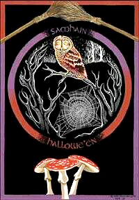
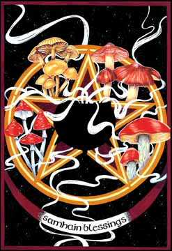

|
Halloween, Samhain, Todos los Santos, Fiesta de las Sombras (Strega)

Samhain es uno de los cuatro Sabats mayores de la rueda del año mágica y se celebra en el mes de Hécate, la noche que va del 31 de Octubre al 1 de Noviembre. Es la contrapartida temporal oscura de Beltane.
La fiesta pagana estaba dedicada a los muertos, al año pasado y al final de un ciclo completo de la rueda celta de la vida. Para celtas y anglosajones era el fin del verano y el comienzo del año nuevo. El calendario ritual empezaba cuando el Sol se estaba poniendo en el sistema eclíptico, sistema utilizado por los antiguos sacerdotes astrónomos para determinar las estaciones mediante el movimiento solar. Es el punto medio entre el Equinoccio de Otoño y el Solsticio de Invierno.
Era una época de purificación en la que se quemaban imágenes que representaban los miedos de los participantes.
Para los neopaganos el dios muere en este momento para renacer en Yule.
A veces se representaba al dios con dos rostros, como Jano bifronte. Una cara mira al pasado, observando a los que se fueron, y la otra al futuro, mirando a quienes están por llegar. Despide y recibe.
Especialmente se recuerda en esta noche a aquellos que murieron en el presente año.
Los celtas encendían hogueras en los montes para alejar a los malos espíritus. Se recogía la última cosecha. Lo que no se cosechaba se dejaba en los campos como ofrenda a los espíritus.
Durante la noche se rendía culto a los poderes ocultos, mistéricos, a la brujería, al poder femenino oscuro…
Momento ideal para pensar en nuestra condición de seres mortales o seres-para-la-muerte siguiendo a Heidegger.
Los celtas creían que en esa noche las ánimas volvían a sus antiguos hogares. El velo entre los dos mundos se hace más fino en esta noche y por ello se puede establecer contacto fácilmente con los seres del otro mundo. Muchos magos aprovechan para hacer sesiones de oui-ja o espiritismo.
El cristianismo adaptó esta fiesta pagana a su día de Todos los Santos o día de Los Fieles Difuntos.
En la mitología celta el pueblo feérico también celebra Samhain. En la víspera de Noviembre las hadas podían tomar maridos mortales y se abrían todas las grutas para que cualquier mortal que se atreviese pudiera echar un vistazo a sus palacios llenos de tesoros.
En Irlanda y Escocia existe la creencia popular de que las almas de los duendes salen esta noche. En la Irlanda celta la Oidhche Shamhna o víspera de Noviembre, anunciaba el inicio de la gran fiesta con juegos y carreras en honor de Tlachta, diosa madre. Esta antigua deidad dio pie a la Cailleach y a la Morrigana. La Cailleach presidía la fiesta junto con Dagda, dios fundador del druidismo. Juntos representaban las fuerzas primigenias responsables del nacimiento y de la muerte.
El último día de Octubre se convirtió en la víspera de Todos los Santos, All Hallows, conocido ahora como Halloween.
En Bretaña, la costumbre era dejar un sitio libre en la mesa para los muertos. No se hacía distinción entre los vivos y los muertos. Se creía que ambos cohabitan este mundo.
Podemos hacer un viaje simbólico al averno dando un paseo por un laberinto...pues el laberinto es la metáfora del viaje de los muertos y el renacimiento. Sería ideal visitar algún laberinto de piedra o de esos que nos encontramos en los jardines. O trazar uno sobre la arena, o dibujarlo en el suelo con ramas o cuerdas. Así pondremos en escena nuestra transformación. Podemos pedir consejo y orientación a Hécate.
Es un buen momento para eliminar todo lo que no ha funcionado y empezar de nuevo.
Debemos buscar las vibraciones protectoras para mantener a raya la negatividad los doce meses siguientes.
Los espíritus de los muertos deambulan hasta este día, en el que pueden cruzar al otro lado para descansar. Podemos intentar contactar con los ancestros, llorar a los muertos y ayudarles a completar su viaje.
La calavera era el gran símbolo de esta fiesta y fue sustituida por las calabazas típicas que ahora vemos por doquier.
El signo de la cruz es muy importante en este día por su poder contra el mal. También se utilizan espejos para espantar a las almas, y los cristales transparentes, que son poderosos protectores. Se suele utilizar también el escorpión por ser el signo del mes.
Los talismanes más representativos son los espejos y las fotos de parientes fallecidos.
Se practica la adivinación con el Tarot y especialmente con espejos negros o bolas de cristal.
Es el momento de conectarse con la sabiduría interna. Hay una leyenda celta que cuenta que las cuatro abuelas de Halloween tienen cada una un tesoro que guardan celosamente: el caldero del renacimiento que simboliza el placer, la piedra del destino,que representa el poder; la lanza, el valor; y la espada, el conocimiento.
La costumbre de ir de puerta en puerta a por caramelos proviene de la tradición inglesa de recoger comida o dinero para los pobres. En algunas partes de Europa aún se reparte comida a los pobres en las puertas de los cementerios.
Se solía dejar un poco de leche y una vela blanca en la ventana o en una mesa, para iluminar el camino a los espíritus errantes.
Se colocan más sillas alrededor de la mesa para los visitantes invisibles que quieran acudir a la cena.
Los ancianos representan al año viejo y por ello se les tiene en mayor consideración en este día.
En Escocia se disfrazaban para cambiar su rol al menos una vez al año; los hombres se disfrazaban de mujeres y las mujeres de hombres. Antiguamente los celtas se vestían de blanco para dar la bienvenida al primer día de invierno.
Se pueden encender velas para iluminar el camino a los ancestros, o colocar manzanas para marcarles el camino de vuelta a casa.
Gemas: azabache, obsidiana, turmalina y ónice.
Plantas: retama, helecho, salvia y la mandrágora, hojas de roble y acebo.
Incienso: ruda, mandrágora.
Dioses: Anubis, Osiris, Selket, Hécate, Lilith, Innana, Ereshkigal, Rey Acebo, Kali, la Santa Muerte...
Colores: rojo sangre, naranja y negro, morado.
Comida: calabaza, manzanas asadas, granada, nueces, carne de vaca, sidra caliente.
Otras relaciones: La muerte en la cultura mesopotámica es un estado de purificación que conduce a una nueva vida. La diosa Inanna decidió bajar al inframundo para enfrentarse a su hermana y deidad opuesta, Ereshkigal. En la lucha Inanna muere. Enki crea a unas criaturas sin género que engañan a Ereshkigal consiguiendo que les entregue el cadáver de la diosa al que aplican el "agua de la vida". Así Inanna resucita, pero tiene que encontrar un sustituto que ocupe su lugar en ultratumba. Al volver a la tierra encuentra que su esposo Dumuzi ha ocupado su puesto. Dumuzi reina durante el otoño y el invierno, mientras Inanna reina durante la primavera y el verano.
Osiris era el dios de la resurrección, símbolo de la fertilidad y regeneración del Nilo. Muere como hombre pero resucita como inmortal gracias al dios Thot. Es el responsable de juzgar a los muertos en el Duat, donde está acompañado por 42 dioses-jueces que dictaminarán lo que acaecerá al difunto. En los textos funerarios el faraón difunto se identificaba con Osiris, rey de los muertos, del mismo modo que en vida lo había hecho con su hijo Horus.

|
 RSS
RSS